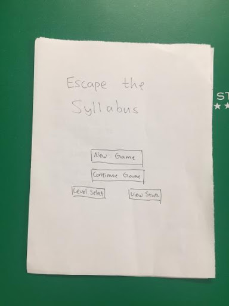
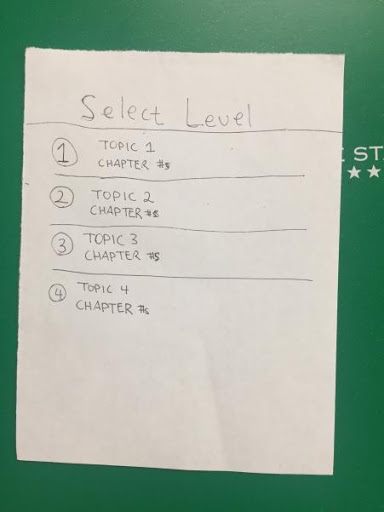
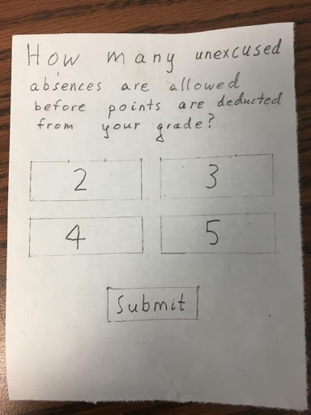
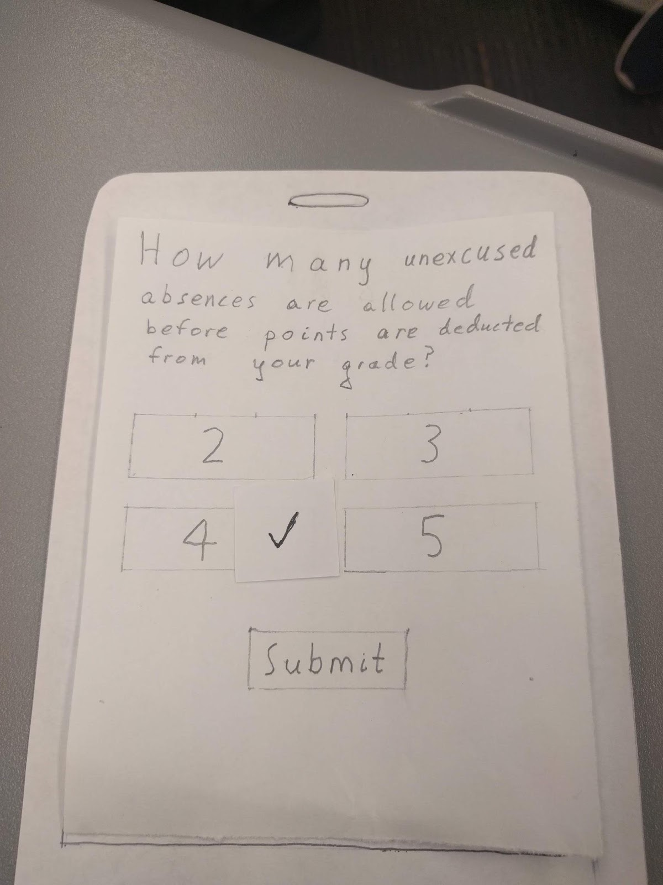
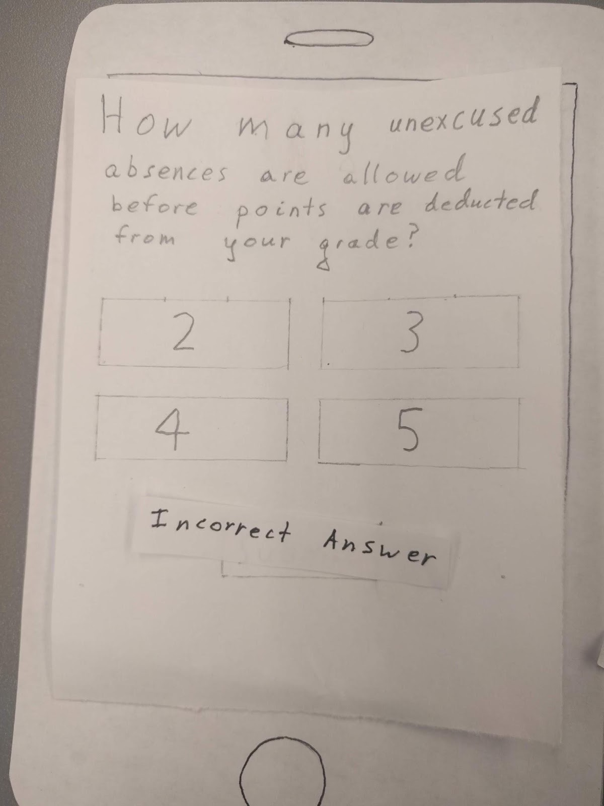

Escape the Syllabus (CS 3311), August 2018 - Present
Task
Our group, Team Skedaddle, was asked to create a mobile app for students and professors that included a syllabus and learning outcomes in the form of a game. Our client, Dr. Laquana Cooke, asked us to use Unity as our development platform.
User Research
Before we began developing ideas, we consulted our users. After all, we were building a product for them and not ourselves. We used convenience sampling while conducting interviews and distributed a survey to students on Georgia Tech's campus. My main tasks in this process were identifying the key issues, interviewing one of our potential users, and helping create the interview guide. The key issues we wanted to explore were: demand for product, student priorities, and language barriers. Here are our results:
International Students:
- Half of the international students did not have questions about the syllabus. The other half that did have questions either talked to the professor/TA directly, or emailed the professor/TA. None of the international students had issues with language barriers.
- About 90% felt the need to familiarize the syllabus, and experienced inconvenience or disadvantage of not knowing the syllabus.
- About 75% felt that grading policy was the most important part of the syllabus. 50% felt that office hours was the most important. About 25% felt that course material was the most important.
- About 50% had professors that utilized games in their class, and they felt that it was helpful to keep students engaged.
- About 50% think that they would play a game on the syllabus, because it would be more entertaining. The rest of them feel that it would be useless because reading the syllabus is more straightforward and less time-consuming.
Non-International Students:
- Students value grading criteria and a list of important dates.
- Games weren’t used that often in class, but when they were, they were entertaining. The games had more of a question and answer, informal style. The games were memorable and helped students understand material.
- Students would be interested in playing a mobile syllabus game if they had an incentive (i.e. extra credit). They would rather look at PDF since it saves time. However, they are willing to try the app at least once and see how engaging it is from there.
- Without an incentive, students were divided on whether the game was worth their while.
Ideation
First, we created user stories and acceptance criteria. This helped us get an idea of how the app would look and different interactions we wanted the user to have.
Lo-Fi Prototype
Our initial prototype consisted of several key screens: Start, Login/Register, Home, Select Level, and Question screen.
  
Heuristic Evaluations
After completing our initial prototype, we conducted an internal heuristic evaluation. Next, we had three students from another group evaluate our prototype and report their findings. The evaluators were asked to complete a series of tasks: register, login, view current stats, select an available level, and answer a trivia question. Then we evaluated the prototype according to ten heuristics.
We found that our initial prototype was simple and consistent. It had a minimalistic design where it wasn’t too cluttered and only contained relevant information. Our screens also followed a logical flow. Our initial prototype also wasn't confusing for first time users.
On the other hand, we had failed to include reversible interactions. Both our login and registration pages were missing cancel buttons and our level select screen was missing a back button. Our users didn’t feel in control. We also didn’t include appropriate feedback for incorrect login/registration attempts. If a user entered in invalid characters or an invalid user/password combination for login, they were not notified. Also, on the question screen, our users didn’t know if they even got the correct answer.
Revised Screens
The revised Login/Register and Level Select Screens included cancel buttons and back buttons.
Users now receive feedback for successful and unsuccessful login/registration attempts as well as answer attempts on the Question screen.
 